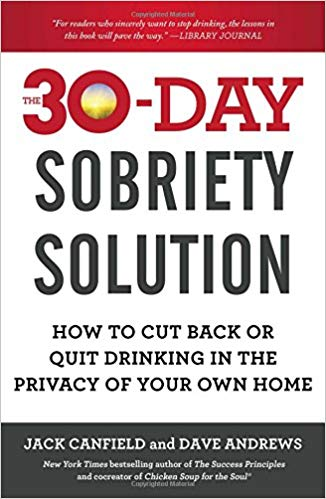
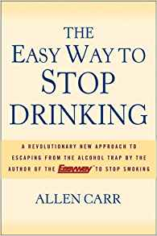
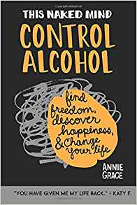
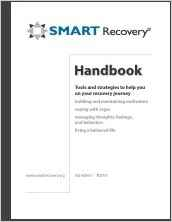
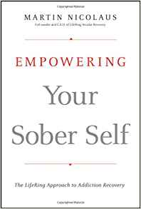
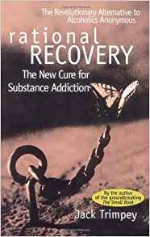
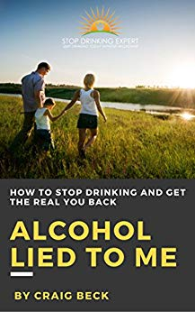

Books and Literature
There are numerous books that have been written with the sole purpose of aiding you during your path to recovery. Thanks to advice from various alcoholism-related communities, we have compiled a list of the most revered and best-reviewed books on alcoholism and recovery. Please feel free to contact us if there are any books that you believe should be added to this list.
Whenever possible, we tried to find free versions of this literature. We are constantly reaching out to the authors in an attempt to provide free options.
For many people, the first book that they pick up is the "The Big Book". You can read the ebook for free here. or listen to the audiobook for free here.
To get you started, you can order free physical copies or download a free digital PDF of the "Rethinking Drinking" workbook here. The National Institute of Alcohol Abuse will mail you up to 30 copies at no cost. (A great idea to hand out to newcomers to any recovery community that you may be involved with)
Canfield, Jack & Andrews, Dave - The 30-Day Sobriety Solution
Organized into five phases that span 30-day periods, this book guides you through each day with practical exercises that, over time, allow you to more easily make positive choices again and again. “The Sobriety System” is an empowerment program that moves systematically from beliefs (including limiting ones) to feelings and emotions to concrete actions and behaviors that promote better outcomes.
Carr, Allen - The Easy Way to Stop Drinking (2005)
Carr offers a startling new view of why we drink and how we can escape the addiction. Step by step, with devastating clarity and simplicity, he applies the Easyway™ method, dispelling all the illusions that surround the subject of drinking and that can make it almost impossible to imagine a life without alcohol.
Grace, Annie - This Naked Mind(2015)
This book, without scare tactics, pain or rules, gives you freedom from alcohol. By addressing causes rather than symptoms it is a permanent solution rather than lifetime struggle. It removes the psychological dependence allowing you to easily drink less (or stop drinking). Annie’s clarity, humor and unique ability to blend original research with riveting storytelling ensures you will thoroughly enjoy the process.
Hardin, Rosemary (Ed.) - SMART Recovery Handbook(2013)
GoodReads |Amazon |Smartrecovery.org
The SMART (Self Management Addiction Recovery Program) Handbook is written in simple, straightforward language with Tools, exercises, techniques and strategies to help those with drinking and substance-abuse addictive behaviors.
Nicolaus, Martin - Empowering Your Sober Self(2009)
Written by the co-founder and C.E.O. of LifeRing Secular Recovery, this book offers a perspective on recovery that can motivate change in clinicians and researchers as well as among individuals struggling to find their sober selves.
Porter, William - Alcohol Explained (2015)
William Porter drank for 25 years. He wanted to understand, scientifically, why he (or anyone) would become captive to alcohol and how to become free again. Alcohol Explained is the result of his researching the chemical, physiological, and psychological aspects of alcohol and reporting the results in understandable language.
Trimpey, Jack - Rational Recovery(1996)
More than a philosophy or therapy, and not dependent on spiritual beliefs, Rational Recovery offers an aggressive self-help program to take charge of one's behavior immediately. Now this proven process is made available in this unique, user-friendly instruction guide.
Beck, Craig - Alcohol Lied to Me (2012)
Craig was a successful & functioning professional man in spite of a ‘2 bottles of wine a night’ drinking habit. For 20 years he struggled with problem drinking, all the time refusing to label himself an alcoholic because he didn't believe he met the stereotypical image that the word portrayed. Slowly he discovered the truth about alcohol addiction & one by one all the lies he had previously believed started to fall apart.